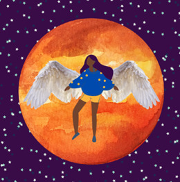

Gaby Varela
| Maria Beatriz Domingos de Oliveira e Maria Eduarda Alves Balbino Dantas |
Maria Luiza Oliveira Silva |
|---|---|
A principal intenção da obra é ressaltar o cotidiano das pessoas negras, ainda mais as crianças, correndo de armas, ressaltando a ação policial dentro de favelas, onde a maioria das pessoas são negras. Nos mostrando uma cena onde as crianças correm da bola pois há a presença de armas, a presença de ação policial em meio a comunidade onde vivem, ainda mais no dia das crianças, indicado no calendário em cima. E uma mulher chorando, que pode ser interpretada como sendo a mãe dessas crianças, por talvez não podê-las protegê-las desse cotidiano, de não poder dar a essas crianças algo mais pacífico e menos perigoso. |
Como a artista original, Gaby Varela, fala muito sobre os Orixás além de denunciar o racismo, acredito que o 1º se aplique a essa obra pois parece ser algo mais místico. Parece ser a Orixá Oxum, deusa da fertilidade, representada na obra tanto pela flor de lótus quanto pela mulher grávida, além de que Oxum muito comumente é representada junto de lagos. Já as montanhas, lua e sol juntos na imagem, podem estar sendo usadas para representar a força dessa fertilidade, desse poder da natureza tão presente em Oxum, já que o eclipse muitas vezes é usado para simbolizar a ampliação dos poderes da natureza e as montanhas estão repletas de árvores, animais, vida. |
|  | |
|---|---|
| Bruna Romeiro e Leticcia Medeiros | Milena do Nascimento Rocha |
Nesta obra, temos a representação de uma mulher negra sobrevoando no céu estrelado, passando entre a visão do observador da obra e a lua, como um eclipse. As asas geralmente significam a libertação de algo, de alguma amarra, e a lua pode estar representando a passagem de uma etapa da vida ou de um plano para outro. Ou seja, pode estar representando tanto a mudança da etapa da vida, se livrando de amarras antigas, quanto a mudança do plano físico para o espiritual. E tal eclipse pode estar sendo usado para destacar essa mudança. |
Essa obra pode ser interpretada como alguém se conectando com seu eu interior, como pode-se ver pela pessoa meditando em preto enquanto há outra pessoa de branco parecendo relaxada dentro de si. As flores reafirmam essa imagem pois podem passar a sensação de calma, de algo belo, algo relaxado. |